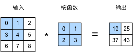

本文FROM《动手学深度学习》第六章 卷积神经网络 6.1和6.2小节
从全连接层到卷积
假设我们使用之前的全连接层来训练图片数据集。一张普通图像都是百万像素，如果把图像的每一个像素作为一个特征传入MLP，那么网络的每次输入都是百万维度，这是不可接受的；其次，之前我们处理二维图像时，把二维图像的所有像素作为一个一维向量输入MLP，丢失了图像的结构特征。
卷积神经网络（convolutional neural networks，CNN）应运而生，它是机器学习利用自然图像中一些已知结构的创造性方法。
自然图像的两个性质
我们根据自然图像的两个性质，来设计适合于计算机视觉的神经网络架构：
- 平移不变性（translation invariance）：不管检测对象出现在图像中的哪个位置，神经网络的前面几层应该对相同的图像区域具有相似的反应，即为“平移不变性”。
- 局部性（locality）：神经网络的前面几层应该只探索输入图像中的局部区域，而不过度在意图像中相隔较远区域的关系，这就是“局部性”原则。最终，可以聚合这些局部特征，以在整个图像级别进行预测。
MLP的限制
首先，多层感知机的输入是二维图像$\mathbf{X}$，其隐藏表示 $\mathbf{H}$ 在数学上是一个矩阵，在代码中表示为二维张量。其中 $\mathbf{X}$ 和 $\mathbf{H}$ 具有相同的形状。
为了方便理解，我们可以认为，无论是输入还是隐藏表示都拥有空间结构。
所谓隐藏表示是指输入经过MLP的一层后得到的输出。
使用 $[\mathbf{X}]{i, j}$ 和 $[\mathbf{H}]{i, j}$ 分别表示输入图像和隐藏表示中位置($i$, $j$)处的像素。
为了使每个隐藏神经元都能接收到每个输入像素的信息，我们将参数从权重矩阵（如同我们先前在多层感知机中所做的那样）替换为四阶权重张量 $\mathsf{W}$。假设 $\mathbf{U}$ 包含偏置参数，我们可以将全连接层形式化地表示为
在之前输入输出都是一维张量时，权重为二维张量。现在输入输出都是二维张量，则权重为四维张量。
这里 $\mathsf{W}$ 和 $\mathsf{V}$ 的转换仅仅是重新进行了索引。我们只需重新索引下标 $(k, l)$，使 $k = i+a$、$l = j+b$， 由此可得 $[\mathsf{V}]{i, j, a, b} = [\mathsf{W}]{i, j, i+a, j+b}$。
索引 $a$ 和 $b$ 通过在正偏移和负偏移之间移动覆盖了整个图像。对于隐藏表示中任意给定位置（$i$, $j$）处的像素值$[\mathbf{H}]{i, j}$，可以通过在 $x$ 中以 $(i, j)$ 为中心对像素进行加权求和得到，加权使用的权重为 $[\mathsf{V}]{i, j, a, b}$ 。
平移不变性
现在引用上述的第一个原则：平移不变性。这意味着检测对象在输入 $\mathbf{X}$ 中的平移，应该仅仅导致隐藏表示 $\mathbf{H}$ 中的平移。也就是说， $\mathsf{V}$ 和 $\mathbf{U}$ 实际上不依赖于 $(i, j)$ 的值，即 $[\mathsf{V}]{i, j, a, b} = [\mathbf{V}]{a, b}$。并且 $\mathbf{U}$ 是一个常数，比如 $u$。因此，我们可以简化 $\mathbf{H}$ 定义为：
这就是 卷积 （convolution）。我们是在使用系数 $[\mathbf{V}]{a, b}$ 对位置 $(i, j)$ 附近的像素 $(i+a, j+b)$ 进行加权得到$[\mathbf{H}]{i, j}$。
注意，$[\mathbf{V}]{a, b}$ 的系数比 $[\mathsf{V}]{i, j, a, b}$ 少很多，因为前者不再依赖于图像中的位置。这就是显著的进步！
局部性
现在引用上述的第二个原则：局部性。如上所述，为了收集用来训练参数 $[\mathbf{H}]{i, j}$ 的相关信息，我们不应偏离到距 $(i, j)$ 很远的地方。这意味着在 $|a|> \Delta$ 或 $|b| > \Delta$ 的范围之外，我们可以设置 $[\mathbf{V}]{a, b} = 0$。因此，我们可以将 $[\mathbf{H}]_{i, j}$ 重写为
简而言之， 公式（1）代表的是一个 卷积层 （convolutional layer），而卷积神经网络是包含卷积层的一类特殊的神经网络。
在深度学习研究社区中， $\mathbf{V}$ 被称为 卷积核 （convolution kernel） 或者 滤波器 （filter），它仅仅是可学习的一个层的权重。
当图像处理的局部区域很小时，卷积神经网络与多层感知机的训练差异可能是巨大的：以前，多层感知机可能需要数十亿个参数来表示网络中的一层，而现在卷积神经网络通常只需要几百个参数，而且不需要改变输入或隐藏表示的维数。
参数大幅减少的代价是，我们的特征现在是平移不变的，并且当确定每个隐藏激活的值时，每一层只能包含局部的信息。
以上所有的权重学习都将依赖于归纳偏置。当这种偏置与现实相符时，我们就能得到样本有效的模型，并且这些模型能很好地泛化到未知数据中。
但如果这偏置与现实不符时，比如当图像不满足平移不变时，我们的模型可能难以拟合我们的训练数据。
卷积
在进一步讨论之前，我们先简要回顾一下为什么上面的操作被称为卷积。在数学中，两个函数（比如 $f, g: \mathbb{R}^d \to \mathbb{R}$）之间的“卷积”被定义为
也就是说，卷积是测量 $f$ 和 $g$ 之间（把其中一个函数“翻转”并移位 $\mathbf{x}$ 时）的重叠。
当我们有离散对象时，积分就变成求和。例如：对于由索引为$\mathbb{Z}$的、平方可和的、无限维向量集合中抽取的向量，我们得到以下定义：
对于二维张量，则为 $f$ 的索引 $(a, b)$ 和 $g$ 的索引 $(i-a, j-b)$ 上的对应和：
这看起来类似于公式（1），但有一个主要区别：这里不是使用 $(i+a, j+b)$ ，而是使用差值。然而，这种区别主要是装饰性的，因为我们总是可以匹配公式（1）和公式（2）之间的符号。我们在公式（1）中的原始定义更正确地描述了互相关（cross-correlation）。
通道
然而（上述）这种方法有一个问题：我们忽略了图像一般包含三个通道/三种原色（红色、绿色和蓝色）。实际上，图像不是二维张量，而是一个由高度、宽度和颜色组成的三维张量，比如包含 $1024 \times 1024 \times 3$ 个像素。前两个轴与像素的空间位置有关，而第三个轴可以看作是每个像素的多维表示。因此，我们将 $\mathsf{X}$ 索引为 $[\mathsf{X}]{i, j, k}$ 。由此卷积相应地调整为 $[\mathsf{V}]{a,b,c}$ ，而不是 $[\mathbf{V}]_{a,b}$ 。
此外，由于输入图像是三维的，我们的隐藏表示 $\mathsf{H}$ 也最好采用三维张量。换句话说，对于每一个空间位置，我们想要采用一组而不是一个隐藏表示。这样一组隐藏表示可以想象成一些互相堆叠的二维网格。因此，我们可以把隐藏表示想象为一系列具有二维张量的 通道 （channel）。这些通道有时也被称为 特征映射 （feature maps），因为每个通道都向后续层提供一组空间化的学习特征。直观上你可以想象在靠近输入的底层，一些通道专门识别边，而其他通道专门识别纹理。
为了支持输入 $\mathsf{X}$ 和隐藏表示 $\mathsf{H}$ 中的多个通道，我们可以在 $\mathsf{V}$ 中添加第四个坐标，即 $[\mathsf{V}]_{a, b, c, d}$ 。综上所述，
其中隐藏表示 $\mathsf{H}$ 中的 $d$ 索引表示输出通道，而随后的输出将继续以三维张量 $\mathsf{H}$ 作为输入进入下一个卷积层。所以，公式（3）可以定义具有多个通道的卷积层，而其中 $\mathsf{V}$ 是该卷积层的权重。
图像卷积
互相关运算
严格来说，卷积层是个错误的叫法，因为它所表达的运算其实是 互相关运算 (cross-correlation)，而不是卷积运算。为了与深度学习文献中的标准术语保持一致，我们将继续把“互相关运算”称为卷积运算，尽管严格地说，它们略有不同.此外，对于卷积核张量上的权重，我们称其为元素。
根据上一节的描述，在卷积层中，输入张量和核张量通过(互相关运算)产生输出张量。
首先，我们暂时忽略通道（第三维）这一情况，看看如何处理二维图像数据和隐藏表示。在下图中，输入是高度为 $3$、宽度为 $3$ 的二维张量（即形状为 $3 \times 3$ ）。卷积核的高度和宽度都是 $2$。

在二维互相关运算中，卷积窗口从输入张量的左上角开始，从左到右、从上到下滑动。当卷积窗口滑动到新一个位置时，包含在该窗口中的部分张量与卷积核张量进行按元素相乘，得到的张量再求和得到一个单一的标量值，由此我们得出了这一位置的输出张量值。
在如上例子中，输出张量的四个元素由二维互相关运算得到，这个输出高度为 $2$ 、宽度为 $2$ ，如下所示：
注意，输出大小略小于输入大小。这是因为卷积核的宽度和高度大于1，而卷积核只与图像中每个大小完全适合的位置进行互相关运算。所以，输出大小等于输入大小 $n_h \times n_w$ 减去卷积核大小 $k_h \times k_w$，即：
这是因为我们需要足够的空间在图像上“移动”卷积核。稍后，我们将看到如何通过在图像边界周围填充零来保证有足够的空间移动内核，从而保持输出大小不变。接下来，我们在 corr2d 函数中实现如上过程，该函数接受输入张量 X 和卷积核张量 K ，并返回输出张量 Y 。
import torch |
# 对上述函数进行验证 |
tensor([[19., 25.],
[37., 43.]])
卷积层
卷积层对输入和卷积核权重进行互相关运算，并在添加标量偏置之后产生输出。所以，卷积层中的两个被训练的参数是卷积核权重和标量偏置。就像我们之前随机初始化全连接层一样，在训练基于卷积层的模型时，我们也随机初始化卷积核权重。
基于上面定义的 corr2d 函数[实现二维卷积层]。在 __init__ 构造函数中，将 weight 和 bias 声明为两个模型参数。前向传播函数调用 corr2d 函数并添加偏置。
class Conv2D(nn.Module): |
高度和宽度分别为 $h$ 和 $w$的卷积核可以被称为 $h \times w$ 卷积或 $h \times w$ 卷积核。我们也将带有 $h \times w$ 卷积核的卷积层称为 $h \times w$ 卷积层。
图像中目标的边缘检测
如下是卷积层的一个简单应用：通过找到像素变化的位置，来检测图像中不同颜色的边缘。
首先，我们构造一个 $6\times 8$ 像素的黑白图像。中间四列为黑色（$0$），其余像素为白色（$1$）。
X = torch.ones((6, 8)) |
tensor([[1., 1., 0., 0., 0., 0., 1., 1.],
[1., 1., 0., 0., 0., 0., 1., 1.],
[1., 1., 0., 0., 0., 0., 1., 1.],
[1., 1., 0., 0., 0., 0., 1., 1.],
[1., 1., 0., 0., 0., 0., 1., 1.],
[1., 1., 0., 0., 0., 0., 1., 1.]])
接下来，我们构造一个高度为 $1$ 、宽度为 $2$ 的卷积核 K 。当进行互相关运算时，如果水平相邻的两元素相同，则输出为零，否则输出为非零。
K = torch.tensor([[1.0, -1.0]]) |
现在，我们对参数 X （输入）和 K （卷积核）执行互相关运算。如下所示，输出Y中的1代表从白色到黑色的边缘，-1代表从黑色到白色的边缘，其他情况的输出为 $0$。
Y = corr2d(X, K) |
tensor([[ 0., 1., 0., 0., 0., -1., 0.],
[ 0., 1., 0., 0., 0., -1., 0.],
[ 0., 1., 0., 0., 0., -1., 0.],
[ 0., 1., 0., 0., 0., -1., 0.],
[ 0., 1., 0., 0., 0., -1., 0.],
[ 0., 1., 0., 0., 0., -1., 0.]])
现在我们将输入的二维图像转置，再进行如上的互相关运算。其输出如下，之前检测到的垂直边缘消失了。不出所料，这个卷积核K只可以检测垂直边缘，无法检测水平边缘。
corr2d(X.t(), K) |
tensor([[0., 0., 0., 0., 0.],
[0., 0., 0., 0., 0.],
[0., 0., 0., 0., 0.],
[0., 0., 0., 0., 0.],
[0., 0., 0., 0., 0.],
[0., 0., 0., 0., 0.],
[0., 0., 0., 0., 0.],
[0., 0., 0., 0., 0.]])
学习卷积核
在卷积神经网络中，卷积核是需要学习的参数。
现在让我们看看是否可以通过仅查看“输入-输出”对来学习由 X 生成 Y 的卷积核。我们先构造一个卷积层，并将其卷积核初始化为随机张量。接下来，在每次迭代中，我们比较 Y 与卷积层输出的平方误差，然后计算梯度来更新卷积核。为了简单起见，我们在此使用内置的二维卷积层，并忽略偏置。
这一段有几个问题：
- conv2d是什么，是nn.Conv2d函数本身，还是nn.Conv2d的返回值
- 为什么要将XY转换为四维。
- l（loss）和conv2d之间是怎么建立起联系的？
# 构造一个二维卷积层，它具有1个输出通道和形状为（1，2）的卷积核 |
epoch 2, loss 7.561
epoch 4, loss 2.024
epoch 6, loss 0.649
epoch 8, loss 0.236
epoch 10, loss 0.091
epoch 12, loss 0.037
epoch 14, loss 0.015
epoch 16, loss 0.006
epoch 18, loss 0.002
epoch 20, loss 0.001
查看我们所学到的卷积核权重张量，可以发现我们学习到的卷积核权重非常接近我们之前定义的卷积核K。
conv2d.weight.data.reshape((1, 2)) |
tensor([[ 0.9966, -1.0032]])
特征映射和感受野
输出的卷积层有时被称为 特征映射 （Feature Map），因为它可以被视为一个输入映射到下一层的空间维度的转换器。在CNN中，对于某一层的任意元素 $x$ ，其 感受野 （Receptive Field）是指在前向传播期间可能影响 $x$ 计算的所有元素（来自所有先前层）。
注意，感受野的覆盖率可能大于某层输入的实际区域大小。让我们用图1为例来解释感受野：给定 $2 \times 2$ 卷积核，阴影输出元素值 $19$ 的接收域是输入阴影部分的四个元素。假设之前输出为 $\mathbf{Y}$ ，其大小为 $2 \times 2$ ，现在我们在其后附加一个卷积层，该卷积层以 $\mathbf{Y}$ 为输入，输出单个元素 $z$。在这种情况下， $\mathbf{Y}$ 上的 $z$ 的接收字段包括 $\mathbf{Y}$ 的所有四个元素，而输入的感受野包括最初所有九个输入元素。因此，当一个特征图中的任意元素需要检测更广区域的输入特征时，我们可以构建一个更深的网络。
源码
https://github.com/guoyujian/blog-resource/blob/main/d2l-notebooks/conv-layer.ipynb